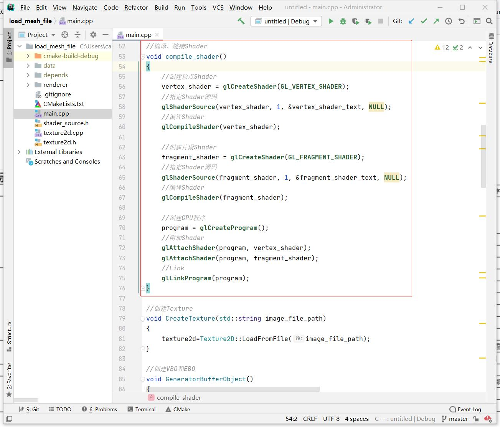

7.3 Shader文件创建与使用
CLion项目文件位于 samples\mesh_and_material\use_shader_file
之前项目的Shader代码是写死在shader_source.h，不便于修改和更新。
Shader分为Vertex Shader(顶点Shader)和Fragment Shader(片段Shader)，现在就将它们分别存放到.vs和.fs文件中。
1. 创建Shader文件
创建Unlit.vs 和 Unlit.fs，将shader_source.h中的Shader代码放进去。

2. 加载Shader文件
创建类 Shader负责Shader文件的加载、编译、创建Shader程序、Link。，代码文件是shader.h。
2.1 加载Shader文件
在创建Shader文件时，保证顶点Shader、片段Shader文件名一致，这样只要用Shader文件路径 和后缀拼起来就可以将他们都加载到内存。
//加载Shader文件并解析
void Shader::Parse(string shader_name) {
shader_name_=shader_name;
//组装完整文件路径
string vertex_shader_file_path=shader_name+".vs";
string fragment_shader_file_path=shader_name+".fs";
//读取顶点Shader代码
ifstream vertex_shader_input_file_stream(vertex_shader_file_path);
string vertex_shader_source((std::istreambuf_iterator<char>(vertex_shader_input_file_stream)),std::istreambuf_iterator<char>());
//读取片段Shader代码
ifstream fragment_shader_input_file_stream(fragment_shader_file_path);
string fragment_shader_source((std::istreambuf_iterator<char>(fragment_shader_input_file_stream)),std::istreambuf_iterator<char>());
CreateGPUProgram(vertex_shader_source.c_str(), fragment_shader_source.c_str());
}
2.2 创建GPUProgram
之前的例子，创建GPUProgram的代码在main.cpp中：

{kind=link}
现在将它移动到shader.cpp中：
//编译Shader,创建GPU程序;
void Shader::CreateGPUProgram(const char* vertex_shader_text, const char* fragment_shader_text) {
//创建顶点Shader
unsigned int vertex_shader = glCreateShader(GL_VERTEX_SHADER);
//指定Shader源码
glShaderSource(vertex_shader, 1, &vertex_shader_text, NULL);
//编译Shader
glCompileShader(vertex_shader);
......
......
}
2.3 激活与禁用
void Shader::Active() {
glUseProgram(gl_program_id_);
}
void Shader::InActive() {
glUseProgram(-1);
}
2.4 缓存与查找
调用Shader::Parse就可以完成Shader文件的加载、编译，并创建GPU Program，不过从之前的例子知道，每执行一次Draw，就是激活一个GPU Program，一个游戏少说也有上百个DrawCall，那么必须要做的就是GPU Program的缓存了。
这里以Shader文件路径做Key，Shader对象实例做Value，缓存起来，并且提供静态接口Find查找或创建Shader:
//查找或创建Shader
Shader* Shader::Find(string shader_name) {
unordered_map<string,Shader*>::iterator iter=kShaderMap.find(shader_name);
if(iter!=kShaderMap.end()) {
return iter->second;
}
Shader* shader=new Shader();
shader->Parse(shader_name);
kShaderMap.insert(pair<string,Shader*>(shader_name,shader));
return shader;
}
3. 使用Shader
在main.cpp中，创建Shader实例对象:
Shader* shader=Shader::Find("../data/shader/unlit");
mvp_location = glGetUniformLocation(shader->gl_program_id(), "u_mvp");
vpos_location = glGetAttribLocation(shader->gl_program_id(), "a_pos");
vcol_location = glGetAttribLocation(shader->gl_program_id(), "a_color");
a_uv_location = glGetAttribLocation(shader->gl_program_id(), "a_uv");
u_diffuse_texture_location= glGetUniformLocation(shader->gl_program_id(), "u_diffuse_texture");
渲染的时候，通过Shader::Active()来指定GPU程序:
//指定GPU程序(就是指定顶点着色器、片段着色器)
shader->Active();
glEnable(GL_DEPTH_TEST);
//指定当前使用的VBO
glBindBuffer(GL_ARRAY_BUFFER, kVBO);
......
......
//指定当前使用的顶点索引缓冲区对象
glBindBuffer(GL_ELEMENT_ARRAY_BUFFER, kEBO);
glDrawElements(GL_TRIANGLES,36,GL_UNSIGNED_SHORT,0);//使用顶点索引进行绘制，最后的0表示数据偏移量。
shader->InActive();
后续修改Shader代码，就只需要修改Shader文件了。